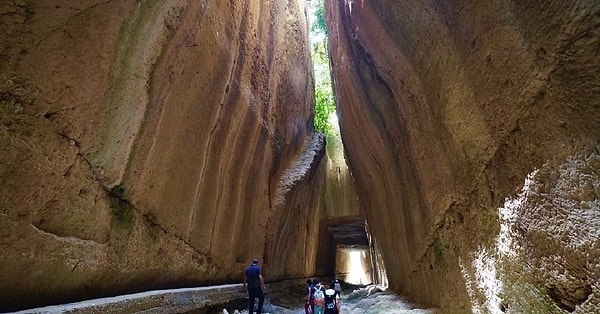
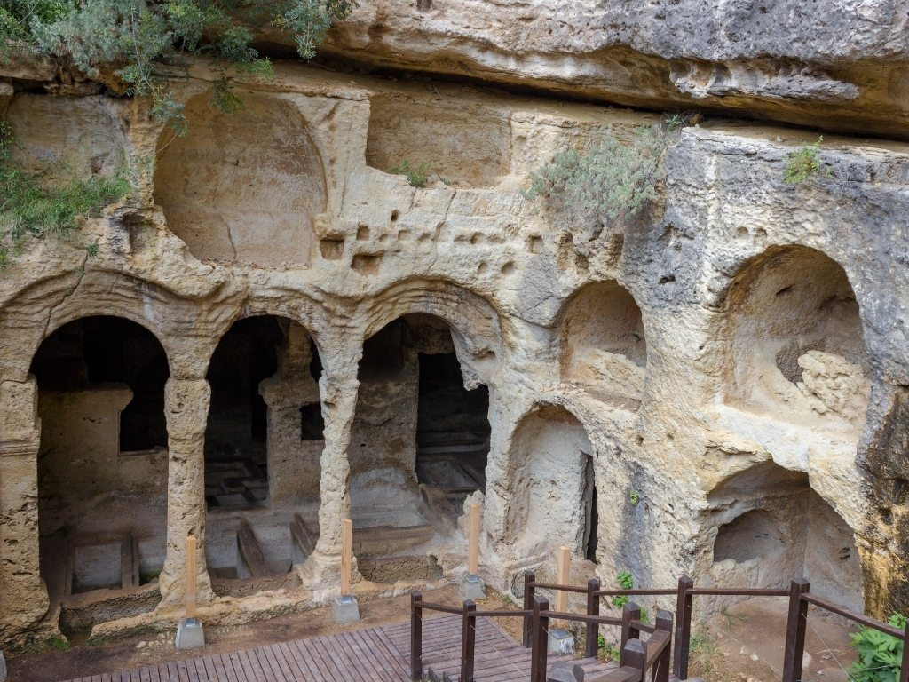
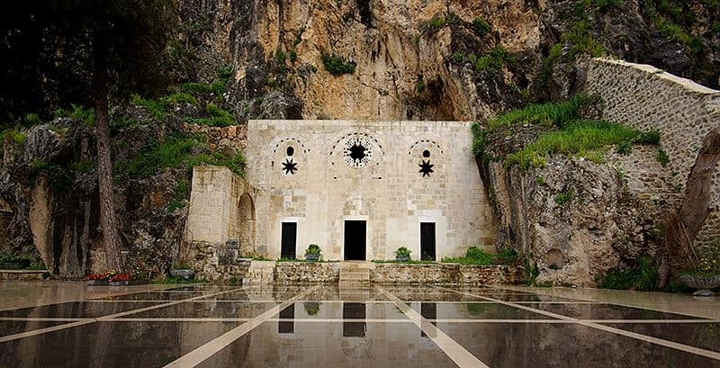
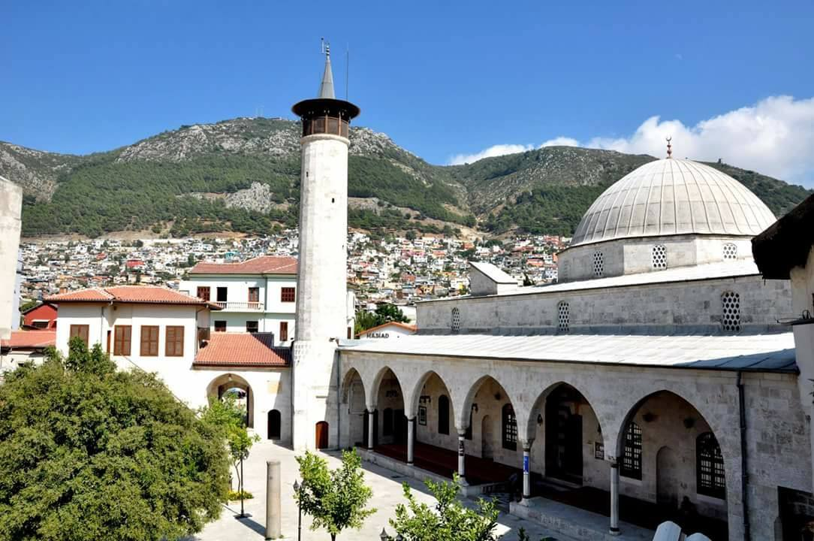
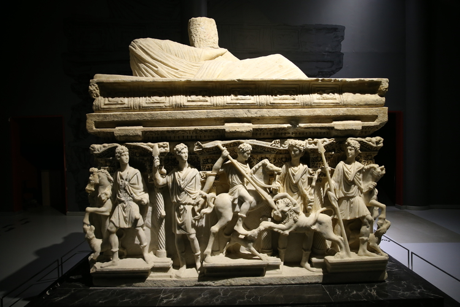
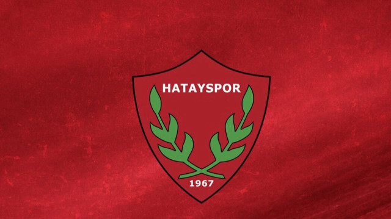

Roma döneminde sel sularını önlemek amacıyla dağın oyulmasıyla yapılan bu tünel, dünyanın elle yapılan en büyük tüneli olarak kabul edilir. Mühendislik harikası olarak görülmektedir.

Titus Tüneli'nin hemen yakınında bulunan bu kaya mezarları, Roma dönemine aittir. İçerisindeki sütunlar ve mezar odaları tamamen kayalara oyularak inşa edilmiştir.

Dünyanın ilk mağara kilisesi olarak kabul edilir. Hristiyanlık isminin dünyada ilk kez burada verildiği bilinmektedir.

Anadolu'nun ilk camisidir. Roma dönemine ait bir pagan tapınağının üzerine inşa edilmiştir ve şehrin en önemli simgelerindendir.

Dünyanın en büyük mozaik koleksiyonlarından birine ev sahipliği yapar. Hatay'ın binlerce yıllık tarihine ışık tutmaktadır.

1967 yılında kurulan Hatayspor, şehrimizin en önemli spor değeridir. Bordo-Beyaz renkleriyle Süper Lig'de mücadele eden takımımız, zorlu süreçlere rağmen şehrimizin pes etmeyen ruhunu temsil etmektedir.
| Kuruluş | Renkler | Stadyum | Lakap |
|---|---|---|---|
| 1967 | Bordo - Beyaz | Mersin Stadyumu (Geçici) | Güneyin Yıldızı |